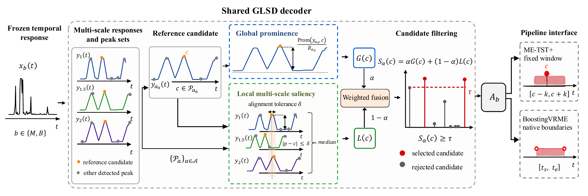

Global prominence
Measures how strongly a reference peak stands out in the full response landscape, normalized by the response range.
Long-video micro-expression spotting
Northeastern University, Shenyang, China Wuhan University, Wuhan, China
Decode candidate peaks by reading both the full response landscape and their aligned local structure across temporal scales.
Method overview

GLSD combines normalized global prominence with peak-aligned local multi-scale saliency, then returns retained candidates through each pipeline's native event-output rules.
Abstract
Long-video micro-expression spotting requires continuous temporal responses to be decoded into discrete events, yet peak amplitude alone does not describe either a candidate’s prominence relative to the response background or its local structure across scales. We propose the Global-Local Saliency Decoder (GLSD), a training-free candidate-level decoder with no learned parameters for frozen temporal responses. GLSD combines normalized global prominence with aligned local multi-scale saliency while retaining each pipeline’s native event-output rules. On official temporal responses from ME-TST+ and BoostingVRME, GLSD yields higher pooled Spotting F1 point estimates in all four pipeline-dataset settings on SAMMLV and CAS(ME)3, with relative gains of 5.58% – 18.15% over Native decoding. BoostingVRME with GLSD reaches 0.3088 and 0.1152, respectively. The locked-parameter fusion ablation shows that the two structural cues contribute jointly to the GLSD decoder. The organized source package is available in the Code resource below.
Decoder design
GLSD changes candidate selection. It does not replace the upstream response generator or each pipeline's event construction rules.
Measures how strongly a reference peak stands out in the full response landscape, normalized by the response range.
Matches nearby peaks across smoothing scales and aggregates bilateral local contrast for the same candidate.
Retains ME-TST+'s fixed windows and BoostingVRME's native boundaries, ordering, and conflict handling.
Main results
Each comparison uses identical official temporal responses and the same pipeline-specific event rules. The cards isolate the gain instead of hiding it inside a zero-based bar.
| Dataset | Pipeline | Native | GLSD | Absolute gain | Relative gain |
|---|---|---|---|---|---|
| SAMMLV | ME-TST+ | 0.2723 | 0.2875 | 0.0152 | 5.58% |
| SAMMLV | BoostingVRME | 0.2906 | 0.3088 | 0.0182 | 6.26% |
| CAS(ME)3 | ME-TST+ | 0.0912 | 0.0978 | 0.0066 | 7.12% |
| CAS(ME)3 | BoostingVRME | 0.0975 | 0.1152 | 0.0177 | 18.15% |
Robust around the operating point. Perturbing the selected threshold by +/-0.05 changes Spotting F1 by at most 0.011 in every setting.
Lightweight decoding. Additional decoding time is 1.16-4.82 ms per video, excluding backbone inference, cache I/O, and offline configuration selection.
Candidate-level examples
Resources
The page structure is stable while the manuscript's Introduction and Related Work continue to evolve.